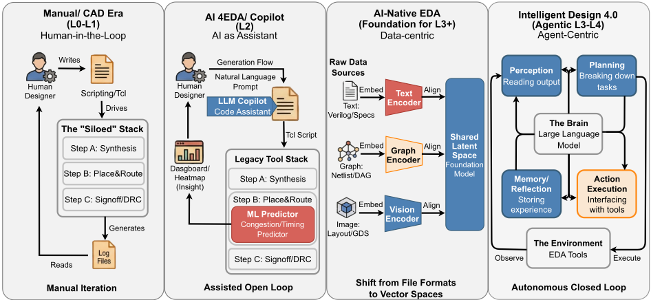
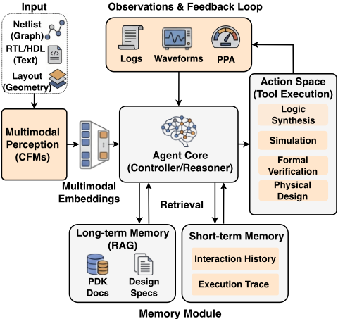
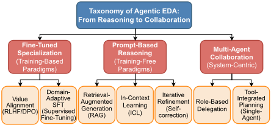
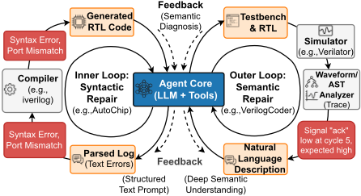

Agentic EDA 的黎明：自主数字芯片设计综述
这是首篇系统综述'Agentic EDA'（自主数字芯片设计）的论文，针对的问题是：现有 'ML for EDA'（L2）点工具只能优化单阶段指标（如线长）、缺乏跨阶段冲突的全局上下文，而芯片设计是零容错物理约束域，LLM Agent 如何从'被动预测'走向 RTL-to-GDSII 全流程的'自主编排'。论文提出 Perception-Cognition-Action 三层 Cognitive Stack 架构，以及 Prompt-Based Reasoning / SFT / Multi-Agent Collaboration 三层范式分类，系统分析了 40+ 代表性框架：前端从 one-shot 生成演进为双环（语法内环+语义外环）修复，后端形成算法求解器与 Agent 编排器（Code-as-Action、NL2SL）的二分。关键结论是'概率生成+确定性验证'的 Neuro-Symbolic Handshake 模式——LLM 负责探索、传统求解器负责验证，错误日志可作为下一轮迭代的反馈信号；但目前尚无 LLM Agent 完成无人工参与的工业级流片，工业级基准缺失是落地首要障碍。对团队而言，其价值不在 EDA 领域本身，而在于它总结的 Agent 架构、工具编排、评测与可靠性的通用工程模式。
芯片设计复杂度（Design Productivity Gap）远超人力增长；现有 'ML for EDA' 点工具是 Specialized Solvers，在孤立阶段内优化特定指标，缺乏解决跨阶段冲突（如 RTL 逻辑改动影响布线拥塞）的全局上下文。论文要解决如何向 Agentic EDA（L3+）范式迁移——用 LLM Agent 自主编排设计流程，并应对'Code-Reality Gap'：在零容错物理约束下让概率性 LLM 可靠工作。
提出首个 Agentic EDA 系统框架：(1) 三层 Cognitive Stack——Perception（将 Netlist/HDL/Layout 多模态对齐到统一嵌入）、Cognition（LLM 作为 Heuristic Search Engine 提出假设，SAT/SPICE 等传统求解器作为 Ground Truth Verifier；Hierarchical Planning 中 Manager 仲裁、Critic 用形式验证剪枝；通过 Hierarchical Memory Systems/Constraint Databases 维护长程一致性，并用 Domain-Specific RAG 检索结构化设计规则与历史错误日志）、Action（NL2SL 生成 Tcl/Python 脚本控制 EDA 工具，沙箱执行与 checkpoint 回滚）；(2) 三层方法论分类：Prompt-Based Reasoning（免训练，ReAct/ICL）、Specialized Models（SFT/RLHF）、Multi-Agent Collaboration；(3) 前端双环修复（编译器日志快速语法内环 + 仿真/形式验证慢速语义外环），后端 'Code-as-Action' 工具编排与跨阶段闭环；(4) 可信性方案：CoT 审计、Red Teaming、形式验证作为可解释性机制（Reasoning Trace + Proof-Carrying Code）、类 LSP 的标准化工具接口与系统级基准。
系统综述并分类了 40+ 代表性框架（从代码生成到物理设计）
引用结果：GPT-4o 在 VerilogEval 上达到约 63% 的通过率
引用结果：ChatEDA 将高层请求分解为工具脚本的成功率为 98.3%
引用结果：REvolution 用进化 Agent 持续优化 PPA，实现 24.5% 的功耗降低
引用结果：经济性分析中 Agent 单次调试会话推理成本约 $30（GPT-4o）
关键否定性结论：尚无 LLM 驱动的自主 Agent 完成过工业芯片的完整无人工流片（Silicon-Proven 缺失）
区别于已有聚焦 Circuit Foundation Model 或一般 LLM-EDA 应用的综述，本文首次聚焦 Agentic Execution Layer（如何构建自主工作流而非模型能生成什么）；首次将 Agentic EDA 定义为 Constrained Neuro-Symbolic Optimization 问题而非 'Chat with Tools'；提出 Perception-Cognition-Action Cognitive Stack 与类比 SAE 自动驾驶分级的 L0-L4 自主性分类；并系统提出 'Sim-to-Silicon Gap' 批判，论证工业级基准缺失是采纳的首要障碍。
相关度级别：high
命中能力域：3.3 Agent 架构与工具使用 | 3.5 评测与可靠使用 | 3.4 多智能体协作 | 3.1 上下文工程与记忆 | 3.2 提示工程
理由：论文领域是芯片设计 EDA，但其方法论内核完全是'如何构建并可靠使用自主 Agent'，直接命中团队多个能力域：3.3（Perceive-Think-Act Agent loop、Code-as-Action 工具调用、沙箱执行与 checkpoint 回滚、错误日志作为迭代反馈信号）；3.4（Manager 仲裁 + Critic 形式验证剪枝的多 Agent 分工模式）；3.5（Unit-Test Fallacy 批判与系统级基准、Failure Mode Taxonomy、推理成本与 Wall-clock Efficiency 权衡）；并实质覆盖 3.1（Hierarchical Memory、Domain-Specific RAG 检索结构化规则与历史错误日志）与 3.2（Prompt-Based Reasoning/ReAct/Tree of Thoughts 作为三大范式之一）。其'概率生成+确定性验证'握手模式与双环修复是可直接迁移到团队代码生成与审查、测试辅助、评测体系建设的通用工程模式。
建议动作：深入精读并做内部分享
arXiv:2512.23189v2 [eess.SY] 2026年2月7日
智能体化电子设计自动化（Agentic EDA）的黎明：自主数字芯片设计综述
Zelin Zang 1, 3，Yuhang Song 2，Aili Wang 2，Bingo Wing-Kuen Ling 1，Qi Sun 4，Zhen Lei 5，Fuji Yang 1，Cheng Zhuo 4，Jiebo Luo 5
1 钱塘高等研究院集成电路与人工智能中心
2 浙江大学ZJUI研究院
3 西湖大学人工智能实验室
4 浙江大学集成电路学院
5 香港科学与创新研究院
半导体行业正面临严峻的“生产力鸿沟”（Productivity Gap）：设计复杂度的增长已超越人类的能力。尽管“AI for EDA”革命（L2）已成功优化了特定的点状问题，但一场向智能体化EDA（Agentic EDA，L3）的范式转变正在兴起——从被动预测演进为对RTL到GDSII流程的自主编排。本综述为这一转变提出了首个系统性框架，将Agentic EDA不仅界定为“与工具对话”（Chat with Tools），而是将其框定为一个受约束的神经符号优化（Constrained Neuro-Symbolic Optimization）问题。我们提出了一种植根于认知栈（Cognitive Stack）的新型分类法——感知（Perception，对齐多模态语义）、认知（Cognition，在严格约束下进行规划）与行动（Action，确定性的工具执行）——以剖析概率性智能体如何在零容忍的物理定律中穿行。通过这一视角，我们分析了该领域的全景：（1）在前端（Frontend），从一次性生成（one-shot generation）向双循环语法-语义修复的转变；（2）在后端（Backend），以算法为中心的求解器与以智能体为中心的编排器之间的二分法——后者将可执行代码视为潜在空间。最后，我们批判性地审视了可信性（Trustworthiness）鸿沟，倡导Sim-to-Silicon基准测试（benchmark）与形式化锚定（formal grounding），以将脆弱的原型转变为具有韧性的工程系统。
半导体行业正逼近一个关键阈值：片上系统（System-on-Chip, SoC）设计的复杂度大有超越人类能力之势。这一“设计生产率鸿沟”（Design Productivity Gap）早在数十年前就已被识别，如今随着晶体管数量突破数千亿而设计团队仅呈线性增长，该鸿沟正不断扩大 [Markov, 2014]。回顾历史，电子设计自动化（Electronic Design Automation, EDA）领域曾以一波又一波的抽象化浪潮予以应对：从手工版图（L0）到算法自动化（L1），后者由模拟退火（Simulated Annealing）[Kirkpatrick et al. , 1983] 和逻辑综合 [Brayton et al. , 1984] 开创。在过去十年中，"ML for EDA"革命（L2）引入了数据驱动的预测方法，其代表是用于布局（placement）的深度学习 [Lin et al. , 2020; Lai et al. , 2022; Mirhoseini et al. , 2021] 以及拥塞分析 [Xie et al. , 2018]。然而，这些 Copilot 级别的工具 [Liu et al. , 2023a] 通常充当专用求解器（Specialized Solvers）——它们在彼此孤立的阶段内优化特定指标（如线长），缺乏解决跨阶段冲突所需的全局上下文，例如寄存器传输级（RTL）逻辑的变更会如何影响布线拥塞。
与此同时，软件工程（Software Engineering, SWE）领域经历了一场深刻的结构性变革：大语言模型（Large Language Models, LLMs）已从被动的代码补全演变为自主的软件工程师。诸如 SWE-agent [Yang et al. , 2024] 这类最先进的智能体（Agent）如今能够探索文件系统、编写复现脚本并提交 pull request，在 SWEbench 排行榜 [Jimenez et al. , 2024] 上成功解决流行库（如 scikit-learn、Django）中的真实 GitHub issue。这种从局部语法建议到全局语义推理的转变，为硬件设计的下一次飞跃带来了启发。
我们认为，业界正在见证一场向智能体化 EDA（Agentic EDA，L3+）的必然转型，其驱动力不仅在于大语言模型（LLMs）的可获得性，更在于孤立式优化的根本局限。与规则明确的博弈不同，芯片设计是一个受约束的神经符号（neurosymbolic）问题：其“正确性”是二元的（例如时序收敛，Timing Closure），而搜索空间却是非凸的，且比围棋（Go）还要大 [Mirhoseini et al. , 2021]。
演进：从预测到编排。为阐明这一范式转变，我们提出了一套 EDA 自主性等级的分类法，其类比于自动驾驶中的 SAE 等级 [SAE On-Road Automated Driving (ORAD) Committee, 2021; Yurtsever et al. , 2020]（图 1）：

挑战：“代码-现实鸿沟”（Code-Reality Gap）。将 LLM 适配到这一领域面临一种独特的本体错配（ontology mismatch）。LLM 是在开放式文本上训练的，而芯片却受制于毫不宽容的物理定律（基尔霍夫定律，Kirchhoff's laws）与零容忍约束。
因此，Agentic EDA 并非仅仅是“与 PDF 对话”（Chat with PDF），而是一个需要严格锚定（rigorous grounding）的约束优化系统 [He et al. , 2025]。
范围与贡献。尽管近期的综述或已涵盖电路基础模型（Circuit Foundation Models）[Fang et al. , 2025c]，或聚焦于一般性的 LLM-EDA 应用 [Pan et al. , 2025]，本文则专门瞄准智能体执行层（Agentic Execution Layer）——重点关注如何构建自主工作流，而不仅仅是模型能够生成什么。我们追溯了从经典算法到现代智能体的发展脉络，提出了一种新颖的分类体系（taxonomy），将相关技术进展划分为神经增强求解器（Neural-Augmented Solvers）与智能体编排器（Agentic Orchestrators）。这包括一项系统性综述，分析了从代码生成 [Liu et al. , 2023b] 到物理设计 [Mirhoseini et al. , 2021] 的 40 余个代表性框架。最后，我们提出了一个未来路线图，批判性地分析了“Sim-to-Silicon 鸿沟”（Sim-to-Silicon Gap），并指出缺乏工业级基准测试是阻碍其落地应用的首要障碍。为帮助读者在这一领域版图中导航，我们在表 1 中呈现了一幅“综述地图”（Survey Map）。
为了分析向以工程师为中心的自主性的转变，我们引入了一个统一框架，其中包含认知栈（Cognitive Stack）与方法论分类体系（Methodological Taxonomy）。
2.1 认知栈（架构）。从静态 LLM 到动态 Agent 的转变意味着一种专门的架构。我们围绕一个三层认知栈（感知-认知-行动，Perception-Cognition-Action）来组织分析，该认知栈实现了自主性所必需的“感知-思考-行动”（Perceive-Think-Act）循环（图 2）。首先是感知（Perception，多模态表示），它将异构数据——网表（图）、HDL（文本）、版图（几何）——转换为统一的多模态嵌入（multimodal embeddings）。CircuitFusion [Fang et al. , 2025b] 与 GenEDA [Fang et al. , 2025a] 等模型利用对比学习将代码与图对齐，克服了层次化 HDL 与扁平化网表之间的粒度不匹配（Granularity Mismatch），而 DeepGate4 [Zheng et al. , 2025] 则通过具有亚线性内存的图 Transformer（graph transformer）解决可扩展性问题。针对数据稀缺（Data Scarcity）问题，近期工作采用了合成数据生成（Synthetic Data Generation）技术：诸如指令回译（instruction back-translation）与缺陷注入（bug injection）等方法（例如 CraftRTL [Liu et al. , 2025a]）构建了大规模合成语料库来引导（bootstrap）Agent，从而克服了专有工业级 IP 与脚本匮乏的问题。
| Stage Paper. | Type. | Role. | Info Flow.Input | Info Flow.Output | Method Form. | Eval (typ.). |
|---|---|---|---|---|---|---|
| Frontend Spec2RTL-Agent [Yu et al. , 2025] GPT4AIGChip [Fu et al. , 2023] VerilogCoder [Ho et al. , 2025] OpenLLM-RTL [Liu et al. , 2025b] VeriGen [Thakur et al. , 2024] AutoChip [Thakur et al. , 2023] FVDebug [Bai et al. , 2025] RTLLM [Lu et al. , 2024] VerilogEval [Pinckney et al. , 2025] | PRT PRT SFT DATA SFT PRT PRT EVAL EVAL | Agent Generator Agent Benchmark Generator Agent Agent Critic Critic | PDF Spec HLS prompts NL spec/prompts RTL tasks/specs partial RTL NL spec + feedback RTL + cex trace NL spec generated RTL | Verilog + Plan Accelerator RTL RTL public benchmarks completed RTL verified RTL fix/patch functional RTL scores | Understand-Plan Demo-Aug. Prompt Semantic Repair dataset + benchmark fine-tuned LLM feedback + tools LLM + FV tool benchmark suite benchmark suite | success rate PPA/function pass@k, compile suite pass@k pass@k, tests task success bug-fix rate functional pass pass@k |
| Backend AlphaChip [Mirhoseini et al. , 2021] CodeNotCanvas [Yang and Ren, 2025] DiffusionPlace [Lee et al. , 2025] TransPlace [Hou et al. , 2025] ORFS-Agent [Ghose et al. , 2025] ChatEDA [He et al. , 2024] REvolution [Min et al. , 2025] Chip-Chat [Blocklove et al. , 2023] ArchPower [Zhang et al. , 2025] | FDN MAS FDN FDN MAS PRT MAS PRT DATA | Agent Agent Generator Generator Agent Planner Agent Agent Critic | netlist + constr. constraints netlist + constr. netlist + constr. netlist + constr. spec + tools netlist NL conversation arch. config | placement Tcl scripts placement placement optimized soln. reports / GDSII optimized PPA Verilog modules power est. | RL + pre-training multi-agent nego. diffusion model GNN + transfer agent + solver multi-agent orches. evolutionary agent conversational assistant dataset + proxy | WL/congestion PPA/validity cong., timing,WL cong., timing,WL QoR / runtime WNS/TNS, Pwr PPA Gain task success accuracy |
| Found. &Sec ChipNeMo [Liu et al. , 2023a] SynC-LLM [Liu et al. , 2025c] GenEDA [Fang et al. , 2025a] AnalogSeeker [Chen et al. , 2025] SoCureLLM [Tarek et al. , 2025] TrojanStego [Meier et al. , 2025] DRC-Coder [Chang et al. , 2025] ChiPBench [Wang et al. , 2024] | FDN DATA DATA FDN MAS SFT SFT EVAL | Foundation Generator Benchmark Foundation Agent Generator Agent Critic | domain corpus (generative) netlist + text analog spec SoC design RTL syntax rules + layouts design + toolchain | found. model synthetic Verilog aligned embed. circuit topology security policy leaked bits DRC checker code PPA outcome | DAPT + Tokenizer hierarchical gen. cross-modal align knowledge distill. red-teaming agent steganography multi-agent VLM end-to-end bench. | domain adapt. scale/quality retrieval/QA QA accuracy detection rate bit error rate F1, time/cost PPA/QoR/cost |
| Stage Paper. | Type. | Role. | Info Flow.Input | Info Flow.Output | Method Form. | Eval (typ.). |
其次是认知（Cognition，推理与规划），它充当神经-符号桥梁（Neuro-Symbolic Bridge），化解概率性 LLM 与确定性物理之间的根本张力。Agent 并不直接“计算”时序或功耗；相反，它们作为启发式搜索引擎（Heuristic Search Engines）对解进行假设，而传统求解器（SAT/SMT、SPICE）则充当真值验证器（Ground Truth Verifiers）。该层处理层次化规划（Hierarchical Planning），其中多智能体系统（MAS）演化为合作博弈（Cooperative Games）：“管理者”（Manager）在各专职 Agent 之间进行仲裁以化解死锁，而“批评者”（Critic）则利用形式验证来剪除无效分支。该层还管理长时程一致性（Long-Horizon Consistency），通过层次化记忆系统（Hierarchical Memory Systems）或约束数据库（Constraint Databases）来应对长达数月流程中的“设计意图漂移”（Design Intent Drift），并采用领域专用检索增强生成（RAG）来检索文档之外的结构化设计规则（DRC）与历史错误日志，以引导推理。
第三是行动（Action，工具执行），它将推理转化为物理变更。与输出文本的 LLM 不同，Agent 执行自然语言到脚本语言（NL2SL）翻译以控制 EDA 工具，我们将这些工具视为外部确定性求解器 [Cheng et al. , 2025]。该层通过验证所生成的动作是否符合半导体物理约束，并在沙箱环境中执行脚本、辅以基于检查点的回滚（checkpoint-based rollback）以从破坏性幻觉中恢复，从而确保锚定（Grounding）与安全性。
2.2 方法论分类（范式）。如图 3 所示，我们根据实现复杂度将现有系统划分为三个层级。基于提示的推理（Prompt-Based Reasoning，即上下文学习（In-Context Learning））涉及免训练的 Agent（例如 ChatEDA [He et al. , 2024]），这类 Agent 通过 ReAct 提示利用通用大语言模型（LLM），并根据工具反馈对脚本进行改进。专用模型（Specialized Models，SFT/RLHF/预训练）通过监督微调（SFT）将领域知识内化。AlphaChip [Goldie and Mirhoseini, 2024] 便是典型例证，它通过在芯片布局上进行大规模预训练，习得了“布局直觉”（layout intuition）。多智能体协作（Multi-Agent Collaboration，以系统为中心）代表了最先进的层级，其涉及通过复杂规划来对齐意图的多智能体系统（MAS）。ArchPower [Zhang et al. , 2025] 便体现了这一点：它通过 Agent 间的协作交互，将高层次的架构决策锚定于详细的功耗建模之上。

对 Agentic EDA 的一个关键批评是：将概率模型用于零容忍工程的风险（即“用骰子来指导手术刀”）。我们认为，这种观点从根本上误解了 Agent 的角色。神经符号握手（Neuro-Symbolic Handshake）：Agent 提供“探索”（Exploration，即在非凸搜索空间中导航），而 EDA 工具则提供“利用”（Exploitation）与“验证”（Verification，即强制执行物理法则）。LLM 从不“猜测”最终的签核（sign-off）结果；它生成的是候选脚本，而这些脚本必须通过编译器、timer（时序分析器）和 DRC 引擎的确定性检查。如果某项检查失败，错误日志便会作为下一次迭代的“梯度信号”（Gradient Signal）。因此，最终输出并非概率性的；它是以确定性验证器为根基的概率性搜索的结果 [Xu et al. , 2025]。从猜测到推理（From Guessing to Reasoning）：当前研究旨在从 Type I（反应式重试，Reactionary Retry）——即基于日志盲目地修复错误 [Blocklove et al. , 2023; Thakur et al. , 2023]——转向 Type II（规划器，Planner），其中 Agent 采用前瞻（Lookahead）机制（例如思维树，Tree of Thoughts）在执行之前模拟结果 [Cheng et al. , 2025]。
前端设计——将架构意图转化为功能性 RTL 及其后续验证——代表了 Agentic EDA 中最为成熟的领域。如图 4 所示，研究已从简单的“一次性生成”（one-shot generation）[Thakur et al. , 2024] 演进为健壮的 Agentic 工作流。尽管 GPT-4o 等模型在 VerilogEval 上达到了约 63% 的通过率 [Pinckney et al. , 2025]，但工业设计的复杂性使得从概率性 token 预测向严谨工程闭环的转变成为必然。我们根据这些进展在标准 IC 生命周期中所扮演的角色对其进行分类：RTL 实现（构建）与自主验证（保障）。


全面的验证计划。在激励方面，PRO-V-R1 [Zhao et al. , 2025] 编排多个 Agent 生成基于 Python 的测试向量（例如 UVM 序列），有效探索基于规则的随机测试可能遗漏的极端情况。
3.3 基准测试（超越单元测试）。落地应用的一个关键障碍是单元测试谬误（Unit-Test Fallacy）。该领域高度依赖 VerilogEval [Liu et al. , 2023b]，而它测试的是模块级语法。然而，在这类“玩具基准测试”（toy benchmarks）上获得的高通过率可能具有误导性——这就好比以折叠纸飞机的能力来评判一位飞机工程师。我们倡导转向系统级基准测试（System-Level Benchmarks，例如 RTLLM [Lu et al. , 2024]、ChipNeMo [Liu et al. , 2023a]），此类基准测试评估接口协议、时钟域交叉与多模块集成，其复杂性在于对约束和系统级依赖的管理。
物理设计（Physical Design），尤其是布局布线（placement and routing，P&R），是计算强度最高的阶段。如表 2 所总结，该领域正呈现出以算法为中心（Algorithm-Centric）的求解器与以 Agent 为中心（Agent-Centric）的工作流之间的二元分化。我们将这些创新划分为两个工程层次：神经增强算法（Neural-Augmented Algorithms，改进内部引擎）与自主工具编排（Autonomous Tool Orchestration，自动化外部设计流程）。
4.1：神经增强算法（求解器）。这一层次聚焦于用学习得到的模型替换 EDA 工具中的启发式组件。一个核心的工程挑战是潜在表示（Latent Representation）的选择。早期的“画布”（Canvas）方法将版图视为图像生成任务 [Lai et al. , 2022]，应用卷积神经网络（CNN）来预测宏单元的位置。然而，基于像素的表示与 EDA 约束存在根本性的不匹配，原因有二：其一，离散化误差（discretization error），即将连续的纳米级坐标映射到离散的网格像素会引入量化噪声，从而不可避免地违反设计规则检查（Design Rule Checks，DRC）；其二，非局部依赖（non-local dependencies），即像素间的相关性是局部的，而在芯片中，一条关键时序路径可能连接两个空间上相距遥远的逻辑门。因此，算法正从顺序强化学习（Sequential RL）向生成式扩散（Generative Diffusion）演进。强化学习（Reinforcement Learning，RL）以 Google 的 AlphaChip [Mirhoseini et al. , 2021] 为代表，在工业界的宏单元布局中占据主导地位，并已在 TPU 量产中实现了成功部署。然而，它面临两个持续存在的挑战：顺序过拟合（Sequential overfitting），即将布局表述为顺序马尔可夫决策过程（Sequential MDP）往往会导致记住特定的网表结构，而非学习到可泛化的策略；以及不可微工具（Non-differentiable tools），即商用 EDA 引擎是黑盒，迫使其依赖样本效率低下的优化。相比之下，扩散模型 [Lee et al. , 2025] 将布局重新定义为一个条件去噪（Conditional Denoising）任务 p θ ( x | c )。通过在连通性梯度的引导下对随机坐标进行迭代精化，这一范式不仅提升了对未见网表的零样本泛化能力，而且与顺序策略所需的重复采样相比，还显著降低了推理开销。
4.2：自主工具编排（“流程”）。与优化固定目标的求解器不同，Agentic AI 充当分层编排器（Orchestrator），通过管理商用工具来闭合设计回路。首先是脚本生成与接口（Script Generation & Interface），它采用“代码即动作”（Code-as-Action）的范式。通过生成可执行的 Tcl 约束 [Yang and Ren, 2025]，智能体将商用工具链用作可靠的“解码器”（Decoder），把符号化规划转化为合法版图。这里的关键创新在于韧性（Resilience）：智能体解析工具日志（"stderr"）并利用 RAG 自我修正脚本，将脆弱的自动化转变为稳健的工程工作流。其次，跨阶段收敛（Cross-Stage Closure）代表了工程变更指令（ECO）自动化的终极愿景。独特之处在于，智能体能够解析后端报告（例如负时序裕量或拥塞图），并自主修改 RTL（例如插入流水线级）。这实现了从“盲目生成”（Blind Generation）到物理感知代码精化（physical-aware code refinement）的转变。ChatEDA [He et al., 2024] 便是典型例证，它将高层请求分解为工具脚本，成功率达 98.3%。类似地，Chip-Chat [Blocklove et al., 2023] 展示了对话式智能体如何迭代地精化设计意图。在正确性之外，REvolution [Min et al., 2025] 利用进化智能体持续优化 PPA，实现了
| Category | Mechanism | Representative Works | Gen. | Train | Infer. | PPA | Primary Limitation |
|---|---|---|---|---|---|---|---|
| RL | Sequential MDP | AlphaChip [Mirhoseini et al. , 2021], MaskPlace [Lai et al. , 2022] | Low | High | Slow | High | Poor Transferability |
| Generative | Cond. Denoising | DiffusionPlace [Lee et al. , 2025] | High | High | Fast | Med | Lack of Precision |
| GNN | Graph Embedding | TransPlace [Hou et al. , 2025], Deep- Gate4 [Zheng et al. , 2025] | High | Med | Fast | High | Graph Scalability |
| Agentic | Tool Orchestration | CodeNotCanvas [Yang and Ren, 2025], ChatEDA [He et al. , 2024] | High | Low | Slow | High | Stability/Convergence |
| Category | Mechanism | Representative Works | Gen. | Train | Infer. | PPA | Primary Limitation |
| Domain | Threat Mechanism | Defense Strategy | Representative Works | |
|---|---|---|---|---|
| Model Integrity | Hardware Trojans Malicious logic insertion via LLM suggestions; Information leakage through code structure | Intent Analysis, Anomaly De- tection, Code Sanitization | TrojanStego [Meier et al. , 2025], TrojanWhisper [Faruque et al. , 2024], LATENT [Chaudhuri et al. , 2025] | |
| Model Integrity | Hallucinations Protocol violations, invalid tax generation, semantic | syn- mis- alignment | Structured Chain-of-Thought (CoT), Formal Verification (FV) Feedback | HaVen [Yang et al. , 2025], Veri- MaAS [Pamnani, 2025] |
| Infrastructure | Flawed/Malicious DRC rule decks; Tool-facing script injec- tion | Auditable Generation, Rule Reasoning, Deterministic Checkers DRC-Coder [Chang et al. , 2025], SoCureLLM [Tarek et al. , 2025] | Compromised Artifacts | |
| Infrastructure | Data Pri- vacy | Training data leakage, IP expo- sure in cloud-based inference | Federated Learning, Local De- ployment, Differential Privacy | CircuitNet [Chai et al. , 2023] |
| Domain | Threat Mechanism | | Defense Strategy | Representative Works |
24.5% 的功耗降低。对这一闭环而言，诸如 ArchPower [Zhang et al., 2025] 这类快速代理模型至关重要，它们能够即时估算功耗，从而指导从 RTL 到 GDSII 再回到 RTL 的迭代精化。超越 PPA 之后，智能体开始着手系统级协同设计（system-level co-design），联合优化硬件加速器及其编译器栈（例如将张量算子映射到定制 ISA），以最大化端到端应用性能 [Fu et al., 2023]。这种贯穿全栈的能力——从软件内核到晶体管尺寸调整——展现了 Agentic 自主性相较于孤立单点工具的真正潜力。
新兴前沿：模拟/混合信号（AMS）设计。尽管上述框架聚焦于数字逻辑，Agentic 范式也正在变革模拟领域。与数字设计的离散抽象不同，AMS 设计需要在严格的物理约束下调优连续参数（例如晶体管宽度）。AnalogSeeker [Chen et al., 2025] 采用知识蒸馏将电路直觉迁移给智能体，而 Gao et al. [Gao et al., 2024] 则证明，Agent 引导的贝叶斯优化通过在非凸的 PPA 景观中高效导航，在运算放大器尺寸调优方面超越了人类专家。
从预测性工具向自主智能体的转变引入了根本性的信任赤字（Trust Deficit）。与确定性且在数学上有界的传统 EDA 算法（例如 A* 搜索）不同，基于 LLM 的智能体是概率性的且不透明的。如表 3 所详述，这一转变将风险面从简单的缺陷扩展到了复杂的信任问题。因此，要使 Agentic EDA 投入实际运营，就需要从“人在回路”（Human-in-the-Loop）验证过渡到严格的信任工程（Trust Engineering），确保生成式创造力受到物理约束和可解释逻辑的严格限定。
5.1 信任赤字：幻觉与木马。Agentic EDA 的可信性同时受到随机错误和恶意意图的损害。首先，幻觉（Hallucinations，随机风险）发生在智能体生成语法正确但功能存在缺陷的设计之时（例如将时钟信号连接到复位引脚）。与歧义尚可被接受的自然语言不同，硬件要求零容忍的精确性。其次，木马（Trojans，对抗性风险）源于大模型的不透明性。TrojanStego [Meier et al., 2025] 展示了攻击者如何通过细微的代码结构操纵，将恶意逻辑（硬件木马）嵌入生成的 RTL 中；而 TrojanWhisper [Faruque et al., 2024] 则强调了“供应链攻击”的风险，即被投毒的训练数据会诱使智能体植入后门。防御需要多层次的方法：在执行前审计智能体推理链（思维链，CoT）的意图分析（Intent Analysis），以及像 SoCureLLM [Tarek et al., 2025] 这样能够自主探测设计漏洞的红队智能体（Red Teaming Agents）。
5.2 验证与可解释性（“为什么”问题）。要让 IC 工程师信任智能体，仅有正确性是不够的；可解释性（Explainability）是必须的。一种在没有任何依据的情况下“神奇地”修复时序违例的“黑盒”优化，在专业上是不可接受的。我们提出，应将形式验证（Formal Verification）不仅视为一种检查器，而是视为一种可解释性机制（Explainability Mechanism）。可追溯性（Traceability）：智能体必须提供推理轨迹（Reasoning Trace，思维链），将高层意图（“修复建立时间违例”）与底层动作（“在线网 X 处插入缓冲器”）关联起来，使工程师能够审计其决策逻辑。证明携带代码（Proof-Carrying Code）：借鉴软件安全领域的思想，未来的智能体不仅应输出 RTL，还应输出随附的形式化属性（SVA），以证明生成的代码满足规格。这将信任模型从信任“模型”（它是可能出错的）转变为信任“证明”（它是可被机器验证的）[Yang et al., 2025]。
5.3 标准化与基准测试（“如何做”的问题）。工具接口的碎片化是构建可信智能体的主要障碍。目前，智能体通过脆弱的、针对特定工具的文本解析与 EDA 工具交互。开放智能体 EDA 标准（Open Agentic EDA Standard）：为实现稳健的自主性，该领域需要一个标准化的接口协议（类似于软件工程（SWE）中的 Language Server Protocol），将 EDA 工具状态（例如时序图、拥塞图）以结构化、机器可读的 API 形式暴露出来，而非原始日志文本 [Qiu et al. , 2025]。系统级基准测试（System-Level Benchmarking）：信任还受到代理指标谬误（proxy metric fallacy）的阻碍。在孤立的模块生成（VerilogEval）上获得高通过率，与复杂流程中的成功并不相关。我们倡导采用 ChipNeMo [Liu et al. , 2023a] 和 ChiPBench [Wang et al. , 2024] 这类系统级基准测试，它们评估端到端的 PPA（功耗、性能、面积）结果。只有在工业级约束上证明可复现性，Agentic EDA 才能跨越从学术新颖性到工程化采用的鸿沟。
生成式人工智能（Generative AI）正在重塑电子设计自动化（Electronic Design Automation, EDA），使其从工具驱动的自动化迈向更高层次的工作流自主性。然而，这一转变仍然受到以下因素的制约：零容忍错误机制下的可靠性、有限且专有的训练数据，以及传统工具链的不透明性——这使得关于当前浪潮究竟是“革命还是炒作”的争论持续不断 [Xu et al. , 2025]。这些制约因素表明，进步不能仅依靠规模扩展。
重大挑战：仿真到硅片鸿沟（Sim-to-Silicon Gap）。对当前 Agentic EDA 格局的一个关键批评是缺乏通过实际流片（tape-out）进行的“真值（Ground Truth）”验证。区分经过硅验证的求解器（Silicon-Proven Solvers）与智能体原型（Agentic Prototypes）至关重要。基于强化学习（RL）的系统（例如 AlphaChip [Mirhoseini et al. , 2021]）已成功实现工业流片，但尚无任何由大语言模型（LLM）驱动的自主智能体展示过对工业芯片完整且无需人工参与的流片。大多数学术智能体针对代理指标（例如布局线长）进行优化，或使用无法反映先进工艺节点（例如 TSMC N3）复杂物理效应的开源工艺设计套件（PDK，例如 Sky130）。批评者认为，在这类“玩具数据”上训练的智能体无法泛化到工业场景。我们认为，尽管参数层面的泛化能力有限，但方法论层面的可迁移性依然成立：调试保持时间违例的逻辑（例如插入缓冲器）在不同工艺节点之间是不变的，即使具体的缓冲器驱动强度有所不同。为弥合数据鸿沟，社区必须优先发展工业级基准测试（benchmark），超越经过混淆的基准测试，转向通过程序化生成来复现先进工艺节点约束（例如多重图形化、电迁移）的合成数据集。与此同时，必须开发领域自适应技术，在不泄露知识产权（IP）的前提下，将推理模式从数据丰富的开放领域迁移到数据匮乏的专有领域（例如通过联邦学习）。
未来方向 I：技术锚定（Technical Grounding，可靠性与接口）。部署自主性需要解决技术对齐问题。首先，约束锚定（Constraint Grounding）解决概率性 LLM 与零容忍硬件之间的冲突。未来的工作必须实现神经符号对齐（Neuro-Symbolic Alignment），使生成式输出在数学上受到形式验证约束的限定 [Yang et al. , 2025]。其次，工具锚定（Tool Grounding，标准化接口）至关重要，因为目前智能体是通过脆弱的文本日志与工具交互的。未来在于语义化 EDA 接口（Semantic EDA Interfaces）——将内部工具状态（例如时序图）以结构化嵌入形式暴露出来的应用程序接口（API）。这就需要一个开放的 Agentic EDA 标准（类似于语言服务器协议 LSP）来统一智能体查询工具状态的方式 [Qiu et al. , 2025]。
未来方向 II：运行落地（部署与经济学）。经济落地（自主性的成本）回应了这样一种质疑：与人力相比，智能体的推理成本过高（例如，通过 GPT-4o 进行一次调试会话需花费 30 美元）。然而，这种比较忽视了上市时间（TTM）溢价。在一个错过流片窗口便意味着数百万美元损失的行业中，智能体的价值不在于比实习生更便宜，而在于比精疲力竭的工程师更快。通过将迭代式 Tcl 调试的“苦差事”卸载给智能体（它们可 24/7 全天候运行），设计团队可以缩短关键路径进度。因此，未来的基准测试必须在报告 token 成本的同时报告墙钟效率（Wall-clock Efficiency，即 Time-to-Result），以捕捉这种权衡。此外，为实现鲁棒性，还需要建立失效模式分类（Failure Mode Taxonomy），刻画智能体的各类失效，例如死循环（Deadlooping，即无收敛的振荡）、上下文丢失（Context Loss，即遗忘全局约束）和工具幻觉（Tool Hallucination）。
前瞻展望：递归自我改进。超越生产力层面，Agentic EDA 指向一个虽属推测但具有变革性的方向：AI 设计 AI 硬件（AI Designing AI Hardware）。随着智能体逐渐具备优化新型架构的能力，它们可能协助设计下一代芯片，而这些芯片又将用于训练更强的智能体。尽管这一递归自我改进（Recursive Self-Improvement）循环仍是一个遥远的愿景，但它表明，约束式神经符号规划（Constrained Neuro-Symbolic Planning）可以为其他物理工程领域提供蓝图。
务实路线图。近期（1-2 年），L3 智能体将作为脚本生成（Tcl）的“强力副驾驶”，并在人类监督下工作。中期（3-5 年），预计将实现自主的模块级流程，前提是 Sim-to-Real 基准测试能够弥合差距。远期（5 年以上），则展望需要经认证保证的全芯片智能体架构探索。